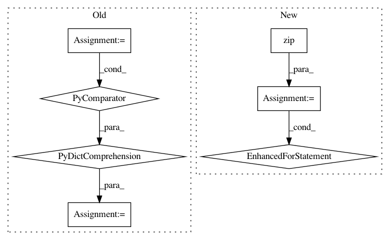

313b79ce9cc8538a78edfc82ccc7b02c23766287,osmnx/utils_graph.py,,graph_from_gdfs,#Any#Any#Any#,104
Before Change
// add each edge and its non-null attributes
for (u, v, k), row in gdf_edges.set_index(["u", "v", "key"]).iterrows():
d = {label: val for label, val in row.items() if isinstance(val, list) or pd.notnull(val)}
G.add_edge(u, v, k, **d)
utils.log("Created graph from node/edge GeoDataFrames")
return G
After Change
attribute_data = zip(*[gdf_edges[col] for col in attr_col_headings])
multigraph_edge_keys = gdf_edges["key"]
attribute_data = zip(attribute_data, multigraph_edge_keys)
// Generate graph edges
for s, t, attrs in zip(gdf_edges["u"], gdf_edges["v"], attribute_data):
attrs, multigraph_edge_key = attrs
key = G.add_edge(s, t, key=multigraph_edge_key)
G[s][t][key].update(zip(attr_col_headings, attrs))
// Add nodes attributes
for col in gdf_nodes.columns:
nx.set_node_attributes(G, name=col, values=gdf_nodes[col].dropna())
utils.log("Created graph from node/edge GeoDataFrames")
In pattern: SUPERPATTERN
Frequency: 3
Non-data size: 7
Instances
Project Name: gboeing/osmnx
Commit Name: 313b79ce9cc8538a78edfc82ccc7b02c23766287
Time: 2020-10-20
Author: 44049940+Labulitiolle@users.noreply.github.com
File Name: osmnx/utils_graph.py
Class Name:
Method Name: graph_from_gdfs
Project Name: horovod/horovod
Commit Name: ea692ade194392250df2e4681764090868bdca82
Time: 2021-02-04
Author: irasit@users.noreply.github.com
File Name: horovod/spark/torch/estimator.py
Class Name: TorchModel
Method Name: _transform
Project Name: GPflow/GPflow
Commit Name: 0b9e1f064ab1ce1d994f86686e7d662a46095e36
Time: 2020-03-30
Author: st--@users.noreply.github.com
File Name: doc/source/notebooks/advanced/mcmc.pct.py
Class Name:
Method Name: marginal_samples